Boeing 737 Next Gen
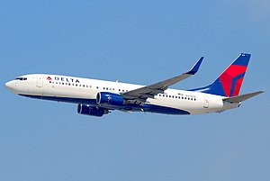The Boeing 737 Next Generation, commonly abbreviated as 737NG,or 737 Next Gen jet airliners are narrow-body aircraft powered by two engines and produced by Boeing Commercial Airplanes. Launched in 1993 as the third generation derivative of the Boeing 737, it has been produced since 1996 and is an upgrade of the 737 Classic (−300/-400/-500) series. It features a redesigned wing with a larger area, a wider wingspan, a greater fuel capacity and higher MTOWs. It is equipped with CFM56-7 series engines, a glass cockpit, and features upgraded and redesigned interior configurations. It has a longer range and larger variants than its predecessor: the series includes four models, the −600/-700/-800/-900, seating between 108 and 215 passengers. The 737NG's primary competition is with the Airbus A320 family. As of 31 May 2019, a total of 7,097 737NG aircraft have been ordered, of which 7,031 have been delivered, the remaining orders are in the -700 BBJ, -800, -800 BBJ and -900ER variants. The upgraded and re-engined 737 MAX series is to supplant the 737NG, with the first 737 MAX delivered in 2017.
Technical Specs
| 737-700 | 737-800 | 737-900 | |
|---|---|---|---|
| Seats (2-class) | 126 | 162 | 178 |
| Maximum seats | 149 | 189 | 220 |
| Length | 33.6 m (110 ft 4 in) | 39.5 m (129 ft 6 in) | 42.1 m (138 ft 2 in) |
| Wingspan | 35.8 m (117 ft 5 in) | 35.8 m (117 ft 5 in) | 35.8 m (117 ft 5 in) |
| Height | 12.5 m (41 ft 3 in) | 12.5 m (41 ft 3 in) | 12.5 m (41 ft 3 in) |
| Engine | CFM-56 | CFM-56 | CFM-56 |
Boeing 737 MAX
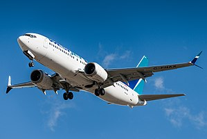The Boeing 737 MAX is a narrow-body aircraft series manufactured by Boeing Commercial Airplanes as the fourth generation of the Boeing 737, succeeding the Boeing 737 Next Generation (NG). It is based on earlier 737 designs, re-engined with more efficient CFM International LEAP-1B engines, aerodynamic changes (including distinctive split-tip winglets), and airframe modifications. The new series was publicly announced on August 30, 2011.The first 737 MAX performed its first flight on January 29, 2016.The series gained FAA certification in March 2017. The first delivery was a MAX 8 in May 2017, to Malindo Air, which placed the aircraft into service on May 22, 2017. The 737 MAX series has been offered in four variants, typically offering 138 to 230 seats and a 3,215 to 3,825 nmi (5,954 to 7,084 km) range. The 737 MAX 7, MAX 8 (including the denser, 200–seat MAX 200), and MAX 9 are intended to replace the 737-700, -800, and -900, respectively.Additional length is offered with the further stretched 737 MAX 10. As of June 2019, the Boeing 737 MAX has received 4,934 firm orders and delivered 387 aircraft. After two Boeing 737 MAX 8 aircraft crashed in October 2018 and March 2019 causing 346 deaths, aviation authorities around the world grounded the 737 MAX series.Boeing aims to return the 737 MAX to service in the U.S. by the end of 2019, while the EASA expects a return to service in the first quarter of 2020.
Technical Specs
| 737 MAX 7 | 737 MAX 8 | 737 MAX 9 | 737 MAX 10 | |
|---|---|---|---|---|
| Seats (2-class) | 138 – 153 | 162 – 178 | 178 – 193 | 188 – 204 |
| Maximum seats | 172 | 210 | 220 | 230 |
| Range nm (km) | 3,850 (7,130) | 3,550 (6,570) | 3,550 (6,570)* | 3,300 (6,110)* |
| Length | 35.56 m (116 ft 8 in) | 39.52 m (129 ft 8 in) | 42.16 m (138 ft 4 in) | 43.8 m (143 ft 8 in) |
| Wingspan | 35.9 m (117 ft 10 in) | 35.9 m (117 ft 10 in) | 35.9 m (117 ft 10 in) | 35.9 m (117 ft 10 in) |
| Engine | LEAP-1B from CFM International | LEAP-1B from CFM International | LEAP-1B from CFM International | LEAP-1B from CFM International |
| 210 seats: 737-8-200 | *one auxiliary tank | *one auxiliary tank |
Boeing 747-8
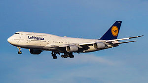The Boeing 747-8 is a wide-body jet airliner developed by Boeing Commercial Airplanes. It was officially announced in 2005. The 747-8 is the third generation of the 747, with a lengthened fuselage, redesigned wings, new engines, and improved efficiency. The 747-8 is the largest 747 version, the largest commercial aircraft built in the United States, and the longest operational passenger aircraft in the world. The 747-8 is offered in two main variants: the 747-8 Intercontinental (747-8I) for passengers and the 747-8 Freighter (747-8F) for cargo.The first 747-8F performed the model's maiden flight on February 8, 2010, with the 747-8I following on March 20, 2011. Delivery of the first freighter aircraft occurred in October 2011 and the passenger model began deliveries in 2012. As of August 2019, confirmed orders for the 747-8 total 154: 107 of the freighter version, and 47 of the passenger version.
Technical Specs
| 747-8 Intercontinental | ||
|---|---|---|
| Seats (3-class) | 410 | |
| Range nm (km) | 7,730 nautical miles (14,310 km) | |
| Length | 76.3 m (250 ft 2 in) | |
| Wingspan | 68.4 m (224 ft 5 in) | |
| Height | 19.4 m (63 ft 6 in) | |
| Engine | GEnx-2B |
Boeing 747-8
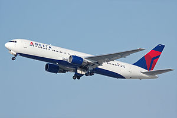The Boeing 767 is a mid- to large-size, mid- to long-range, wide-body twin-engine jet airliner developed and manufactured by Boeing Commercial Airplanes. It was Boeing's first wide-body twinjet and its first airliner with a two-crew glass cockpit. The aircraft has two turbofan engines, a conventional tail, and, for reduced aerodynamic drag, a supercritical wing design. Designed as a smaller wide-body airliner than earlier aircraft such as the 747, the 767 has a seating capacity for 181 to 375 people, and a design range of 3,850 to 6,385 nautical miles (4,431 to 7,348 mi; 7,130 to 11,825 km), depending on variant. Development of the 767 occurred in tandem with a narrow-body twinjet, the 757, resulting in shared design features which allow pilots to obtain a common type rating to operate both aircraft.
technical specs
| 767F | |
|---|---|
| Payload kg (lbs) | 52,480 (115,700) |
| Range nm | 3,255 |
| Length | 54.94 m (180 ft 3 in) |
| Wingspan | 47.57 m (156 ft 1 in) |
| Height | 15.85 m (52 ft) |
Boeing 777

The Boeing 777X is the latest series of the long-range, wide-body, twin-engine Boeing 777 family from Boeing Commercial Airplanes. The 777X will feature new GE9X engines, new composite wings with folding wingtips, greater cabin width and seating capacity, and technologies from the Boeing 787. The 777X was launched in November 2013 with two variants: the 777-8 and the 777-9. The 777-8 provides seating for 365 passengers and has a range of 8,690 nmi (16,090 km) while the 777-9 has seating for 414 passengers and a range of over 7,525 nmi (13,936 km). The -9 is expected to fly in 2020 with deliveries starting the following year.
Technical Specs
| 777–8 | 777–9 | |
|---|---|---|
| List Price | $410.2 million | $442.2 million |
| Program Launch | November 2013 | |
| Seats (2-class) |
384
|
426
|
| Range | Up to 8,730 nmi (16,170 km) |
7,285 nmi (13,500 km)
|
| Length | 229 feet (69.79 m) | 251 feet, 9 in (76.72 m) |
| Wingspan | Extended: 235 feet, 5 in (71.75 m) On ground: 212 feet, 8 in (64.82 m) |
|
| Interior | Larger windows, wider cabin, new lighting, new architecture (more) | |
| Configuration | Twin-aisle (widebody) | |
| Engine | GE9X, supplied by GE Aviation | |
Boeing 787
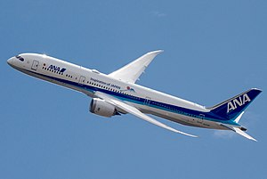The Boeing 787 Dreamliner is an American long-haul, mid-size wide-body, twin-engine jet airliner manufactured by Boeing Commercial Airplanes. Its variants seat 242 to 330 passengers in typical two-class seating configurations. It is the first airliner with an airframe constructed primarily of composite materials. The 787 was designed to be 20% more fuel-efficient than the Boeing 767, which it was intended to replace. The 787 Dreamliner's distinguishing features include mostly electrical flight systems, raked wingtips, and noise-reducing chevrons on its engine nacelles. The aircraft's initial designation was the 7E7, prior to its renaming in January 2005. The first 787 was unveiled in a roll-out ceremony on July 8, 2007, at Boeing's Everett factory. Development and production of the 787 has involved a large-scale collaboration with numerous suppliers worldwide. Final assembly takes place at the Boeing Everett Factory in Everett, Washington, and at the Boeing South Carolina factory in North Charleston, South Carolina. Originally planned to enter service in May 2008, the project experienced multiple delays. The airliner's maiden flight took place on December 15, 2009, and flight testing was completed in mid-2011. Boeing has reportedly spent $32 billion on the 787 program.
Technical Specs
| 787-8 Dreamliner | 787-9 Dreamliner | 787-10 Dreamliner | |
|---|---|---|---|
| Passengers (two-class) | 248 | 296 | 336 |
| Range nmi (km) | 7,305 nmi (13,530 km) | 7,530 nmi (13,950 km) | 6,345 nmi (11,750 km) |
| Length | 57 m (186 ft) | 63 m (206 ft) | 68 m (224 ft) |
| Wingspan | 60 m (197 ft) | 60 m (197 ft) | 60 m (197 ft) |
| Height | 17 m (56 ft) | 17 m (56 ft) | 17 m (56 ft) |
| Engine | GEnx-1B / Trent 1000 | GEnx-1B / Trent 1000 | GEnx-1B / Trent 1000 |
Boeing 777
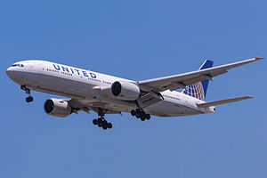The Boeing 777 is a long-range wide-body twin-engine jet airliner developed and manufactured by Boeing Commercial Airplanes. It is the world's largest twinjet and has a typical seating capacity of 314 to 396 passengers, with a range of 5,240 to 8,555 nautical miles (9,704 to 15,844 km). Commonly referred to as the Triple Seven,its distinguishing features include large-diameter turbofan engines, long raked wings, six wheels on each main landing gear, fully circular fuselage cross-section,and a blade-shaped tail cone.Developed in consultation with eight major airlines, the 777 was designed to replace older wide-body airliners and bridge the capacity difference between Boeing's 767 and 747. As Boeing's first fly-by-wire airliner, it has computer-mediated controls. It was also the first commercial aircraft to be designed entirely with computer-aided design.
Technical Specs
| 777-200LR | 777-300ER | |
|---|---|---|
| Seats (2-class) | 317 | 396 |
| Range nm (km) | 8,555 nmi (15,843 km) | 7,370 nmi (13649 km) |
| Length | 63.7 m (209 ft 1 in) | 73.9 m (242 ft 4 in) |
| Wingspan | 64.8 m (212 ft 7 in) | 64.8 m (212 ft 7 in) |
| Height | 18.6 m (61 ft 1 in) | 18.5 m (60 ft 8 in) |
| Engine | GE90-115BL | GE90-115BL |
Rockwell B1 Lancer
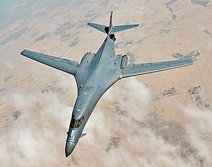The Rockwell B-1 Lancer[N 1] is a supersonic variable-sweep wing, heavy bomber used by the United States Air Force. It is commonly called the "Bone" (from "B-One"). It is one of three strategic bombers in the U.S. Air Force fleet as of 2018, the other two being the B-2 Spirit and the B-52 Stratofortress. The B-1 was first envisioned in the 1960s as a platform that would combine the Mach 2 speed of the B-58 Hustler with the range and payload of the B-52, and was meant to ultimately replace both bombers. After a long series of studies, Rockwell International (now part of Boeing) won the design contest for what emerged as the B-1A. This version had a top speed of Mach 2.2 at high altitude and the capability of flying for long distances at Mach 0.85 at very low altitudes. The combination of the high cost of the aircraft, the introduction of the AGM-86 cruise missile that flew the same basic profile, and early work on the stealth bomber all significantly affected the need for the B-1. This led to the program being canceled in 1977, after the B-1A prototypes had been built. The program was restarted in 1981, largely as an interim measure due to delays in the B-2 stealth bomber program, with the B-2 eventually reaching initial operational capability in 1997. This led to a redesign as the B-1B, which differed from the B-1A by having a lower top speed at high altitude of Mach 1.25, but improved low-altitude performance of Mach 0.96. The electronics were also extensively improved during the redesign, and the airframe was improved to allow takeoff with the maximum possible fuel and weapons load. The B-1B began deliveries in 1986 and formally entered service with Strategic Air Command (SAC) as a nuclear bomber in that same year. By 1988, all 100 aircraft had been delivered. In the early 1990s, following the Gulf War and concurrent with the disestablishment of SAC and its reassignment to the newly formed Air Combat Command, the B-1B was converted to conventional bombing use. It first served in combat during Operation Desert Fox in 1998 and again during the NATO action in Kosovo the following year. The B-1B has supported U.S. and NATO military forces in Afghanistan and Iraq. The Air Force had 66 B-1Bs in service as of September 2012. The B-1B is expected to continue to serve into the 2030s, with the Northrop Grumman B-21 Raider to begin replacing the B-1B after 2025. The B-1s in inventory are planned to be retired by 2036.
Technical Specs
| Function | Long-range, multi-role, heavy bomber |
| Power plant | Four General Electric F101-GE-102 turbofan engine with afterburner |
| Thrust | 30,000-plus pounds with afterburner, per engine |
| Wingspan | 137 ft (41.8 m) extended forward, 79 ft (24.1 m) swept aft |
| Length | 146 ft (44.5 meters) |
| Height | 34 ft (10.4 meters) |
| Weight | Approximately 190,000 lbs (86,183 kg) |
| Max Takeoff Weight | 477,000 lbs (216,634 kg) |
| Fuel Capacity | 265,274 lbs (120,326 kg) |
| Payload | 75,000 lbs internal (34,019 kg), 50,000 lbs (22,679 kg) |
| Speed | 900-plus mph (Mach 1.2 at sea level) |
| Range | Intercontinental |
| Ceiling | More than 30,000 ft (9,144 m) |
| Crew | 4 (aircraft commander, copilot, and two weapon systems officers) |
| Inventory | 66 |
Boeing B-52 Bomber
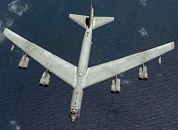The Boeing B-52 Stratofortress is an American long-range, subsonic, jet-powered strategic bomber. The B-52 was designed and built by Boeing, which has continued to provide support and upgrades. It has been operated by the United States Air Force (USAF) since the 1950s. The bomber is capable of carrying up to 70,000 pounds (32,000 kg) of weapons, and has a typical combat range of more than 8,800 miles (14,080 km) without aerial refueling. Beginning with the successful contract bid in June 1946, the B-52 design evolved from a straight wing aircraft powered by six turboprop engines to the final prototype YB-52 with eight turbojet engines and swept wings. The B-52 took its maiden flight in April 1952. Built to carry nuclear weapons for Cold War-era deterrence missions, the B-52 Stratofortress replaced the Convair B-36. A veteran of several wars, the B-52 has dropped only conventional munitions in combat. The B-52's official name Stratofortress is rarely used; informally, the aircraft has become commonly referred to as the BUFF (Big Ugly Fat Fella). The B-52 has been in active service with the USAF since 1955. As of June 2019, 58 are in active service, 18 in reserves, and approximately 12 more aircraft in long term storage.The bombers flew under the Strategic Air Command (SAC) until it was disestablished in 1992 and its aircraft absorbed into the Air Combat Command (ACC); in 2010, all B-52 Stratofortresses were transferred from the ACC to the newly created Air Force Global Strike Command (AFGSC). Superior performance at high subsonic speeds and relatively low operating costs have kept the B-52 in service despite the advent of later, more advanced aircraft, including the Mach 2+ B-58 Hustler, the canceled Mach 3 B-70 Valkyrie, the variable-geometry B-1 Lancer, and the stealth B-2 Spirit. The B-52 completed sixty years of continuous service with its original operator in 2015. After being upgraded between 2013 and 2015, it is expected to serve into the 2050s.
Technical Specs
| Primary Function | Heavy bomber |
| Power plant | 8 Pratt & Whitney engines TF33-P-3/103 turbofan |
| Thrust | Each engine up to 17,000 lbs |
| Wingspan | 185 ft (56.4 m) |
| Length | 159 ft, 4 in (48.5 m) |
| Height | 40 ft, 8 in (12.4 m) |
| Weight | Approximately 185,000 lbs (83,250 kg) |
| Max Takeoff Weight | 488,000 lbs (219,600 kg) |
| Fuel Capacity | 312,197 lbs |
| Payload | 70,000 lbs (31,500 kg) |
| Speed | 650 mph (Mach 0.86) |
| Range | 8,800 mi (7,652 nautical miles) |
| Ceiling | 50,000 ft (15,150 m) |
| Crew | 5 (aircraft commander, pilot, radar navigator, navigator and electronic warfare officer |
| Initial operating capability | May 1961 (Current ‘H’ Model) |
| Armament | Approximately 70,000 lbs (31,500 kg) mixed ordnance -- bombs, smart weapons, mines and missiles. Modified to carry air-launched cruise missiles and Miniature Air Launched Decoy. |
McDonnell Douglas F-15 Eagle
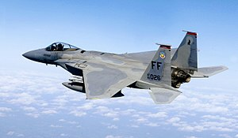The McDonnell Douglas F-15 Eagle is an American twin-engine, all-weather tactical fighter aircraft designed by McDonnell Douglas (now Boeing). Following reviews of proposals, the United States Air Force selected McDonnell Douglas's design in 1967 to meet the service's need for a dedicated air superiority fighter. The Eagle first flew in July 1972, and entered service in 1976. It is among the most successful modern fighters, with over 100 victories and no losses in aerial combat, with the majority of the kills by the Israeli Air Force. The Eagle has been exported to Israel, Japan, and Saudi Arabia. The F-15 was originally envisioned as a pure air-superiority aircraft. Its design included a secondary ground-attack capability that was largely unused. The aircraft design proved flexible enough that an all-weather strike derivative, the F-15E Strike Eagle, an improved and enhanced version which was later developed, entered service in 1989 and has been exported to several nations. As of 2017, the aircraft is being produced in different variants with production to end in 2022.
Technical Specs
| Length | 63.8 ft (19.45 m) |
| Height | 18.5 ft (5.65 m) |
| Wing Span | 42.8 ft (13.05 m) |
| Propulsion | Two P&W F100 or two GE F110 turbofan engines in 29,000 lb (13,154 kg) thrust class with afterburning |
| Weight | 45,000 lb (20, 411 kg) class 81,000 lb (36, 700 kg) max gross takeoff |
| Speed | 1,875 mph (3,017 kph) |
| Armament | F-15A/B/C/D air-to-air: 20mm cannon AIM-120 (AMRAAM) missiles AIM-9 (Sidewinder) missiles AIM-7 (Sparrow) missiles F-15E Air-to-ground: Precision guided munitions Variety of missiles and bombs F-15E Air-to-air: Cannon 8 medium- and short-range missiles Advanced F-15: 12 air-to-air missiles 24 air-to-ground munitions |
Boeing C40-A
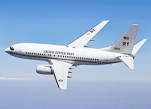The C-40A Clipper provides critical logistics support to the United States Navy. Its flight deck features a flight management computer system with an integrated GPS, and is compatible with future GATM/FANS operating environment (RNP-1).It is outfitted with the Traffic Alert and Collision Avoidance System II, and is RVSM-capable. It also has an enhanced ground proximity warning system, predictive wind shear, head-up display and TACAN/UHF/IFF functions.
Technical Specs
| Engines | Advanced-technology CFM56-7 |
| Maximum Sea-Level Static Thrust Performance | 24,000 lbs |
| Maximum Gross Weight: Takeoff | 171,000 lbs |
| Maximum Gross Weight: Landing | 134,000 lbs |
| Maximum Gross Weight: Zero fuel | 126,000 lbs |
| Fuel Capacity | 6,875 gal |
| Lower Hold Cargo Volume | 885 cu Ft |
| Schedule Reliability | 99.58% |
| Range | 3,200-nmi (121 passengers, or 36,000-lb main deck cargo, or 70 passengers/15,000-lb in combi configuration) |
| Cruise Speed | 0.78 Mach to 0.82 Mach |
| Altitude Capability | 41,000 ft |
| Extended Operations (ETOPS) | 180 min |
Boeing P8
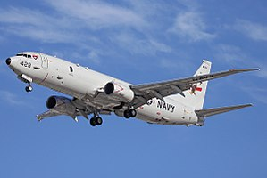The Boeing P-8 Poseidon (formerly Multimission Maritime Aircraft) is a military aircraft developed and produced by Boeing Defense, Space & Security, modified from the 737-800ERX. It was developed for the United States Navy (USN). The P-8 is being operated in the anti-submarine warfare (ASW), anti-surface warfare (ASUW), and shipping interdiction roles. It is armed with torpedoes, Harpoon anti-ship missiles and other weapons, and is able to drop and monitor sonobuoys, as well as operate in conjunction with other assets, including the Northrop Grumman MQ-4C Triton maritime surveillance unmanned aerial vehicle (UAV). The P-8 is operated by the United States Navy, the Indian Navy, Royal Australian Air Force (RAAF) and the UK's Royal Air Force (RAF). It has also been ordered by the Royal Norwegian Air Force (RNoAF), the Royal New Zealand Air Force (RNZAF), and the Republic of Korea Navy (ROKN).
Technical Specs
| Propulsion | Two CFM56-7 engines providing 27,000 lbf thrust each |
| Length | 129.5 ft (39.47 m) |
| Wing Span | 123.6 ft (37.64 m) |
| Height | 42.1 ft (12.83 m) |
| Maximum Takeoff Gross Weight | 189,200 lbs (85,820 kg) |
EA-18G Growler
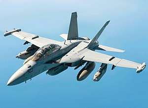The Boeing EA-18G Growler is an American carrier-based electronic warfare aircraft, a specialized version of the two-seat F/A-18F Super Hornet. The EA-18G replaced the Northrop Grumman EA-6B Prowlers in service with the United States Navy. The Growler's electronic warfare capability is primarily provided by Northrop Grumman. The EA-18G began production in 2007 and entered operational service with the US Navy in late 2009. Australia has also purchased twelve EA-18Gs, which entered service with the Royal Australian Air Force in 2017.
Technical Specs
| Length | 60.2 ft (18.3 m) |
| Height | 16 ft (4.9 m) |
| Wing Span | 44.9 ft (13.7 m) |
| Weight Empty | 33,094 lbs (15,011.2 kg) |
| Recovery Weight | 48,000 lbs (21,772.4 kg) |
| Internal Fuel | 13,940 lbs (6,323.1 kg) |
| Max External Fuel | 9,744 lbs (4,419.8 kg) |
| Engines | (2) F414-GE-400 |
| Thrust | 44,000 lbs |
| Spot Factor | 1.23 |
| Crew | One Pilot, one Weapon Systems Officer |
Airforce one
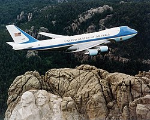Air Force One is the official air traffic control call sign for a United States Air Force aircraft carrying the President of the United States. In common parlance, the term is used to denote U.S. Air Force aircraft modified and used to transport the president.The aircraft are prominent symbols of the American presidency and its power. The idea of designating specific military aircraft to transport the President arose in 1943, when officials of the United States Army Air Forces, the predecessor to the U.S. Air Force, became concerned about using commercial airlines for presidential travel. A C-87 Liberator Express was reconfigured for use as the first dedicated VIP-and-presidential transport aircraft and named Guess Where II, but the Secret Service rejected it because of its safety record. A C-54 Skymaster was then converted for presidential use; dubbed the Sacred Cow, it carried President Franklin D. Roosevelt to the Yalta Conference in February 1945 and was used for another two years by President Harry S. Truman.
Technical Specs
| Crew | 26 (passenger/crew capacity: 102) |
| Model | 747-200B |
| Engines | General Electric CF6-80C2B1 |
| Thrust rating | 56,700 pounds, each engine (252 kn) |
| Long-range mission takeoff gross weight | 833,000 pounds (377,842 kg) |
| Maximum zero fuel weight | 526,500 pounds (238,800 kg) |
| Design mission zero fuel weight | 46,000 pounds (20,865 kg) |
| Maximum landing weight | 630,000 pounds (285,763 kg) |
| Fuel capacity | 53,611 gallons (203,129 L) |
| Range | 7,800 statute miles |
| Wing span | 195 feet, 8 inches (59.64 m) |
| Length | 231 feet, 10 inches (70.66 m) |
| Height | 63 feet, 5 inches (19.33 m) |
| Service ceiling | 45,100 feet (13.747 m) |